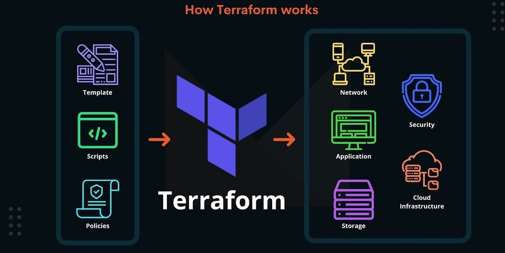

Arquitetura IaC Multi-Região com Terraform: Deploy Seguro no Azure
Como estruturei uma infraestrutura Terraform modular para orquestrar múltiplos serviços Azure — de AI Foundry a Container Apps com ingress privado — e consegui fazer deploy em diferentes regiões e subscriptions com um único codebase.

Visão geral da solução
Nos últimos meses, mergulhei fundo na construção de uma infraestrutura como código para um projeto Azure que foi crescendo conforme as necessidades. Começou com um módulo Terraform simples e foi evoluindo: AI Foundry com GPT-5.1, Virtual Network isolada, Key Vault, Managed Identities e, mais recentemente, Azure Container Apps com ingress privado.
O maior desafio era permitir deploy em diferentes regiões e subscriptions sem transformar a configuração num labirinto. A resposta que encontrei foi um módulo Terraform modular, com valores padrão sensatos, mas totalmente flexível via variáveis. Resultado: um único codebase, múltiplos ambientes.
Como estruturei o projeto em camadas modulares
Criei uma hierarquia de módulos que separa bem as responsabilidades:
foundry-platform/
├── main.tf
├── variables.tf
├── outputs.tf
└── resources/
├── networking/
├── keyvault/
├── identity-rbac/
└── container-apps/Cada módulo é independente, com suas próprias variáveis, recursos e outputs. O módulo pai (foundry-platform) orquestra tudo, passando valores conforme necessário.
A grande vantagem dessa abordagem? Quando precisei adicionar Container Apps, bastou criar um novo submódulo sem tocar em nada do que já existia. Zero refatoração.
Fluxo dos módulos (em português)
Para facilitar a manutenção, organizei o fluxo em uma sequência simples e previsível. Assim, cada camada recebe o que precisa da camada anterior e entrega apenas o necessário para a próxima:
[templates e variáveis]
↓
[módulo pai: foundry-platform]
↓
[networking] → [identity-rbac] → [keyvault]
↓
[container-apps com ingress privado]
↓
[aplicação publicada com acesso interno e autenticação segura no registry]Na prática, isso me permite evoluir a plataforma por blocos: adiciono um módulo novo, conecto os inputs e outputs e sigo sem quebrar o restante do ambiente.
Adicionando Container Apps com ingress privado
Quando surgiu a necessidade de rodar contêineres com imagem privada no ACR, a estrutura modular mostrou todo o seu valor. Resolvi tudo em três partes.
1. Subnet delegada para Container Apps
O primeiro passo foi estender o módulo de networking para criar uma subnet com delegação correta. Sem isso, o Container Apps não consegue se comunicar com a VNet:
resource "azurerm_subnet" "container_apps" {
name = "snet-container-apps"
resource_group_name = var.resource_group_name
virtual_network_name = var.vnet_name
address_prefixes = [var.container_apps_subnet_cidr]
delegation {
name = "delegation"
service_delegation {
name = "Microsoft.App/environments"
actions = ["Microsoft.Network/virtualNetworks/subnets/join/action"]
}
}
}2. Container Apps Environment com load balancer interno
Criei o submódulo em resources/container-apps/ para provisionar o ambiente. O ponto chave aqui é o internal_load_balancer_enabled = true, que garante que o ingress fica privado e sem exposição direta à internet:
resource "azurerm_container_app_environment" "this" {
name = var.environment_name
location = var.location
resource_group_name = var.resource_group_name
log_analytics_workspace_id = var.log_analytics_workspace_id
infrastructure_subnet_id = var.subnet_id
internal_load_balancer_enabled = true
}3. Container App com autenticação no ACR via Managed Identity
A identidade gerenciada criada no submódulo identity-rbac é reaproveitada para puxar a imagem do ACR com segurança — sem senhas guardadas em lugar nenhum:
resource "azurerm_container_app" "this" {
name = var.app_name
container_app_environment_id = azurerm_container_app_environment.this.id
resource_group_name = var.resource_group_name
revision_mode = "Single"
identity {
type = "UserAssigned"
identity_ids = [var.managed_identity_id]
}
registry {
server = var.acr_login_server
identity = var.managed_identity_id
}
ingress {
external_enabled = false
target_port = var.container_port
traffic_weight {
latest_revision = true
percentage = 100
}
}
template {
container {
name = var.app_name
image = var.container_image
cpu = var.cpu
memory = var.memory
env {
name = "ENVIRONMENT"
value = var.environment
}
}
min_replicas = var.min_replicas
max_replicas = var.max_replicas
}
}- external_enabled = false: ingress 100% privado, sem acesso direto pela internet
- registry com identidade gerenciada: pull do ACR automático e seguro, sem credenciais hardcoded
- CPU, memória e réplicas: tudo parametrizado via variáveis para cada ambiente
Deploy em múltiplas subscriptions
Um dos requisitos era permitir deploy em regiões e subscriptions distintas com o mínimo de configuração. A solução ficou bem limpa: cada ambiente tem seu próprio arquivo .tfvars, com os valores específicos daquela subscription:
location = "brazilsouth"
environment = "dev"
resource_group_name = "rg-platform-dev"
vnet_address_space = "10.0.0.0/16"Para trocar de subscription antes do deploy, executo este comando no terminal:
az account set --subscription "subscription-alvo"Com isso, não preciso alterar o código Terraform. Só mudo o contexto do Azure CLI e sigo para o plan.
Validação e segurança antes do apply
Antes de qualquer terraform apply, sempre passo pelo pipeline de validação. Esses três comandos me salvaram várias vezes de subir configuração com erro de sintaxe ou recurso mal referenciado:
terraform fmt -recursive
terraform validate
terraform plan -var-file="dev.tfvars" -out="tfplan"Para garantir permissão de pull no ACR, adicionei um role_assignment condicional. O count garante que o recurso só é criado quando a referência do ACR é informada; se não for, esse bloco é ignorado sem impacto no restante do ambiente:
resource "azurerm_role_assignment" "acr_pull" {
count = var.acr_reference != "" ? 1 : 0
scope = var.acr_reference
role_definition_name = "AcrPull"
principal_id = var.managed_identity_principal
}Conclusão
Trabalhar com Terraform modular no Azure me trouxe resultados bem concretos:
- ✅ Adicionei Container Apps sem quebrar o que já existia
- ✅ Mantive um único codebase rodando em múltiplas subscriptions
- ✅ Reaproveitei identidades, redes e permissões já provisionadas
- ✅ Deploy com ingress privado e autenticação segura no ACR
- ✅ Pipeline de validação antes de aplicar (GitOps-ready)
A chave está na separação de responsabilidades: cada módulo faz uma coisa bem feita, e o módulo pai junta tudo. Quando você precisa de algo novo, é só estender — não refatorar o que já existe.